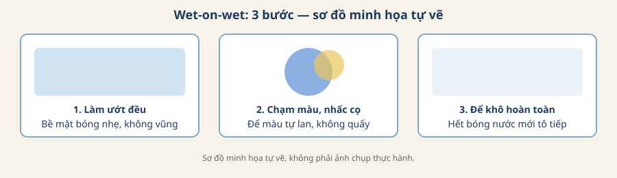

Kỹ thuật loang màu wet-on-wet cho người mới
Tác giả: Ruler
Chuyên mục: Kỹ thuật cơ bản — Cập nhật: 23/11/2026
Wet-on-wet, đọc là ướt trên ướt, là kỹ thuật đưa màu ướt lên giấy đang ướt. Màu gặp nước sẽ tự lan ra, tạo viền mềm và chuyển màu tự nhiên mà bạn khó vẽ được bằng cách tô từng nét. Đây là kỹ thuật làm nên cảm giác trong và nhẹ của màu nước, và cũng là kỹ thuật khiến nhiều người mới vừa thích vừa sợ: thích vì hiệu ứng đẹp, sợ vì màu cứ chạy đi đâu không kiểm soát được.
Bài này chỉ dạy đúng một kỹ thuật: wet-on-wet. Bạn không cần biết thêm kỹ thuật nào khác để làm xong ba bài tập trong bài. Những kỹ thuật khác như vẽ trên giấy khô hay chồng lớp trên lớp đã khô được nhắc ngắn ở cuối bài để bạn phân biệt, còn hướng dẫn đầy đủ của chúng sẽ nằm ở bài khác. Bộ đồ cần dùng trong bài này là bộ đồ tối thiểu đã nêu ở bài đầu của website: giấy 300 gsm cold press khổ nhỏ, hộp màu pan, cọ tròn cỡ 8 và cỡ 4, hai lọ nước, khăn giấy.
Ảnh minh họa: ảnh stock của Tamanna Rumee trên Pexels (giấy phép Pexels, dùng thương mại được) — mảng loang xanh dương minh họa kỹ thuật ướt trên ướt, không phải tranh do Ruler vẽ.
Wet-on-wet là gì, và khi nào nên dùng
Định nghĩa ngắn gọn nhất, theo cách diễn đạt của nhiều hướng dẫn cho người mới, là: bạn làm ướt giấy trước bằng nước sạch, rồi chạm màu đã pha lên vùng giấy đang ẩm. Hop-A-Long Studio mô tả kỹ thuật này là thêm một lớp nước lên giấy trước khi thêm màu, và kết quả thường mềm hơn, ít chi tiết hơn so với vẽ trên giấy khô. PM Art & Crafts viết tương tự: wet-on-wet là đưa màu ướt lên bề mặt giấy đang ướt hoặc lên một lớp màu còn ẩm, nước giúp sắc tố lan ra tự nhiên, tạo đường biên mềm và hiệu ứng chuyển màu đẹp.
Bạn nên dùng wet-on-wet khi muốn vẽ những thứ vốn mềm trong thực tế: bầu trời, mây, mặt nước xa, cánh hoa mờ, lá cây trong sương, nền tranh. Bạn không nên dùng nó khi muốn vẽ đường nét sắc, chữ nhỏ, viền nhà cửa hay mắt mũi. Những chỗ cần sắc nét thì vẽ trên giấy khô sẽ hợp hơn. Hiểu được ranh giới này giúp bạn đỡ thất vọng: không phải wet-on-wet vẽ gì cũng đẹp, mà nó đẹp đúng chỗ mềm.
Một điểm nữa cần nói rõ ngay từ đầu: wet-on-wet không phải là đổ thật nhiều nước lên giấy. Nước nhiều quá sẽ thành vũng, màu loãng đến mức nhạt nhòa, giấy cong lên và lâu khô. Nước ít quá thì màu không loang, chỉ tạo một vệt cứng như vẽ trên giấy khô. Cả bài này xoay quanh việc tìm mức nước vừa đủ, và cách nhận biết mức đó bằng mắt và bằng tay.
Ba mức nước trên cọ và trên giấy
PM Art & Crafts chia lượng nước trên cọ thành ba mức để người mới dễ hình dung: cọ nhiều nước thì đầu cọ bóng và có thể nhỏ giọt, màu lên sẽ loãng và dễ chảy; cọ vừa đủ ẩm thì giữ được nước nhưng không nhỏ giọt, đây là trạng thái dễ kiểm soát nhất; cọ ít nước thì gần khô, màu lên đậm và nét rõ hơn nhưng dễ tạo vệt cứng. Quy tắc nhớ nhanh của nguồn này là nhiều nước thì màu loãng và loang rộng, ít nước thì màu đậm và nét rõ.
Trên giấy, bạn cũng cần nhận biết ba trạng thái tương tự. Giấy ướt bóng là khi bề mặt còn bóng nước, soi thấy ánh sáng phản chiếu, chạm cọ vào sẽ thấy màu chạy rất nhanh. Giấy ẩm bóng nhẹ là khi bề mặt còn bóng mờ, không còn vũng nước, chạm cọ vào thấy màu lan ra từ từ, có thể kiểm soát được. Đây là trạng thái bạn muốn giữ trong phần lớn bài tập. Giấy sắp khô là khi bề mặt hết bóng, sờ vào thấy mát và hơi ẩm, màu chạm vào chỉ lan ra một chút rồi dừng lại, viền bắt đầu cứng dần. Nếu bạn đợi đến khi giấy khô hẳn thì đó không còn là wet-on-wet nữa, mà đã sang vẽ trên giấy khô.
Cách kiểm tra nhanh là nhìn bóng nước dưới ánh sáng. Bạn nghiêng tờ giấy một chút về phía cửa sổ hoặc đèn. Nếu cả vùng giấy còn bóng đều thì còn ướt. Nếu chỉ còn vài chỗ bóng loang lổ thì giấy đang khô không đều, bạn nên đợi thêm hoặc làm ẩm đều lại trước khi vẽ tiếp. Đừng vội vàng chạm màu vào giấy đang khô loang lổ, vì màu sẽ loang chỗ này, dừng chỗ kia, tạo vệt cứng rất khó sửa.
Các bước làm một mảng loang cơ bản
Bài tập đầu tiên của bạn không phải là vẽ một bức tranh, mà chỉ là làm một mảng loang sạch. Bạn cần một tờ giấy nháp khổ nhỏ, cọ tròn cỡ 8, hai màu bất kỳ, ví dụ xanh dương và vàng.
Bước một, dùng cọ sạch lấy nước sạch và quét đều lên vùng giấy bạn muốn vẽ. Quét theo một hướng, chậm và đều, cho đến khi bề mặt bóng nhẹ và đều khắp vùng. Đừng để nước đọng thành vũng ở mép. Nếu thấy vũng, dùng cọ sạch đã vắt khô chạm nhẹ vào vũng để hút bớt nước. Hop-A-Long Studio nhấn mạnh điểm này: cần một lớp nước đều ở vùng bạn định vẽ, không nên để nước đọng thành vũng lớn, nước nên nằm yên ở chỗ bạn đặt và trông bóng, ướt trên bề mặt.
Bước hai, pha màu đậm hơn bạn nghĩ một chút. Vì nước trên giấy sẽ tiếp tục làm loãng màu, nên màu trên cọ nên tương đối đậm. PM Art & Crafts lưu ý đúng điều này: khi vẽ trên giấy đã ướt, màu trên cọ nên tương đối đậm vì nước trên giấy sẽ tiếp tục làm loãng màu. Bạn pha màu trên đĩa trắng, thử một vệt nhỏ trên giấy nháp khô để xem độ đậm, rồi mới chạm cọ vào giấy ướt.
Bước ba, chạm nhẹ đầu cọ vào giấy ướt và nhấc cọ lên ngay. Đừng quấy, đừng tô đi tô lại. Bạn sẽ thấy màu từ từ lan ra xung quanh. Hãy để nó lan. Đây là phần khó nhất với người mới: tay muốn can thiệp, muốn sửa ngay, nhưng càng quấy thì màu càng đục và giấy càng dễ bị xước. Bạn chỉ cần quan sát màu lan trong vài giây, rồi quyết định có thêm màu thứ hai hay không.
Bước bốn, nếu muốn thêm màu thứ hai, hãy chạm màu thứ hai vào lúc màu đầu tiên vẫn còn ướt, ở phần trung tâm hoặc một cạnh của mảng màu. PM Art & Crafts hướng dẫn thêm màu đậm hơn vào trung tâm hoặc một cạnh khi màu đầu tiên vẫn còn ướt, và không dùng cọ khuấy màu. Hai màu sẽ gặp nhau trên giấy và tạo vùng chuyển màu tự nhiên. Bạn có thể nghiêng nhẹ tờ giấy để màu chảy theo hướng mình muốn, nhưng chỉ nghiêng một chút và nghiêng một lần, đừng lắc qua lắc lại.
Bước năm, dừng lại và để khô hoàn toàn. Đừng chạm vào mảng màu khi nó đang khô dở, vì đó là lúc dễ tạo vệt cứng nhất. Bạn hãy đặt tờ giấy xuống, đi rửa cọ, và quay lại sau khi bề mặt hết bóng. Khi khô, màu sẽ nhạt hơn lúc ướt một chút, đó là chuyện bình thường của màu nước. Bạn ghi chú lại: hôm nay mình dùng bao nhiêu nước, màu lan nhanh hay chậm, vùng chuyển màu có mềm như ý không. Ghi chú này giúp buổi tập sau của bạn tiến bộ nhanh hơn là vẽ mười tờ mà không ghi gì.
Ba bài tập nhỏ theo mức khó tăng dần
Sau khi làm được một mảng loang sạch, bạn tập ba bài nhỏ sau, mỗi bài chỉ dùng một tờ giấy khổ nhỏ, ước tính khoảng 20 phút tùy người vẽ.
Bài tập một là bầu trời đơn giản. Bạn làm ướt toàn bộ tờ giấy, rồi chạm màu xanh dương nhạt ở phía trên, chạm màu vàng nhạt ở phía dưới. Hai màu gặp nhau ở giữa sẽ tạo vùng chuyển xanh sang vàng, giống bầu trời lúc chiều. Bạn chừa lại một khoảng trắng nhỏ làm mây bằng cách không chạm màu vào đó, hoặc dùng khăn giấy sạch chạm nhẹ khi màu còn ướt để lấy bớt màu ra. Bài này dạy bạn kiểm soát mảng lớn và chừa trắng.
Bài tập hai là một chiếc lá đơn. Bạn làm ướt chỉ vùng hình lá, không làm ướt cả tờ giấy. Bạn chạm màu xanh lá đậm vào giữa lá, rồi chạm thêm một chút vàng vào một cạnh khi màu vẫn còn ướt. Màu sẽ lan trong khuôn hình lá và dừng lại ở mép khô, tạo hình lá mềm mà không cần vẽ viền. Bài này dạy bạn loang màu trong một vùng có giới hạn, kỹ năng bạn sẽ dùng rất nhiều khi vẽ hoa và lá sau này.
Bài tập ba là một bông hoa ba cánh đơn giản. Bạn làm ướt ba vùng tròn nhỏ tách nhau, mỗi vùng là một cánh hoa. Bạn chạm màu hồng hoặc tím vào giữa mỗi cánh, để màu lan ra mép. Khi ba cánh đã khô, bạn dùng cọ tròn cỡ 4 vẽ thêm chấm giữa hoa và một cành nhỏ trên giấy khô. Bài này dạy bạn kết hợp wet-on-wet cho phần mềm và vẽ trên giấy khô cho phần sắc nét, và dạy bạn chờ khô giữa hai giai đoạn.
Ba bài tập trên dùng cùng một nguyên tắc, chỉ khác nhau ở vùng giấy bạn làm ướt và thời điểm bạn thêm màu. Nếu bài nào chưa ưng, bạn đừng vội vẽ lại cả tờ. Hãy xem lại ghi chú của mình: giấy lúc đó ướt bóng hay chỉ ẩm nhẹ, màu trên cọ đậm hay nhạt, bạn có quấy cọ không. Thường chỉ một trong ba điểm đó là nguyên nhân.
Những lỗi hay gặp khi tập wet-on-wet
Lỗi đầu tiên là nước đọng thành vũng. Dấu hiệu là màu loang quá nhanh, nhạt hẳn đi, và khi khô để lại viền nước tròn. Cách phòng là quét nước đều và hút bớt vũng trước khi chạm màu. Cách sửa khi đã lỡ là dùng cọ sạch đã vắt khô chạm vào vũng để hút bớt, rồi để khô và chấp nhận mảng màu nhạt hơn, đừng cố tô thêm màu đậm vào vũng đang ướt.
Lỗi thứ hai là chạm màu khi giấy đã khô một nửa. Dấu hiệu là màu lan được một chút rồi dừng lại, để lại viền cứng hình hoa. Hiện tượng này còn được gọi là bloom hay backrun, khi nước mới chạm vào vùng đang khô dở sẽ đẩy sắc tố ra mép. Cách phòng là làm ướt đều lại toàn bộ vùng trước khi vẽ, hoặc vẽ nhanh hơn khi giấy còn ẩm đều. Cách sửa khi đã khô thì khó hơn, bạn cần đợi khô hẳn rồi thử lấy màu nhẹ hoặc phủ một lớp loang mới lên trên, hai cách này được hướng dẫn đầy đủ ở bài sửa lỗi.
Lỗi thứ ba là quấy cọ quá nhiều. Dấu hiệu là màu đục dần, giấy bị xước và nổi lông, mảng màu mất độ trong. Cách phòng là chạm cọ rồi nhấc lên, mỗi lần chạm chỉ thêm một chút màu, không tô đi tô lại cùng một chỗ khi còn ướt. Nếu bạn thấy tay mình cứ muốn sửa, hãy đặt cọ xuống và đếm chậm đến mười rồi mới quyết định có chạm tiếp hay không.
Lỗi thứ tư là pha màu quá nhạt ngay từ đầu. Dấu hiệu là khi khô, mảng màu gần như biến mất. Cách phòng là pha màu đậm hơn bạn nghĩ, vì nước trên giấy sẽ làm loãng màu và màu khô sẽ nhạt hơn lúc ướt. Bạn nên thử màu trên giấy nháp trước, và nhớ rằng màu trên đĩa trắng lúc nào cũng trông đậm hơn khi lên giấy ướt.
Wet-on-wet khác wet-on-dry và chồng lớp ở điểm nào
Để bạn không nhầm lẫn khi đọc các bài khác trên website, bài này phân biệt ngắn gọn ba kỹ thuật hay đi cùng nhau. Wet-on-wet là màu ướt lên giấy ướt, viền mềm, màu tự lan. Wet-on-dry là màu ướt lên giấy khô, viền sắc, màu dừng ở chỗ bạn đặt cọ. Chồng lớp, còn gọi là glazing, là tô một lớp màu trong mỏng lên trên một lớp màu đã khô hoàn toàn, để hai lớp tạo ra màu mới khi ánh sáng đi qua. Watercolor Affair giải thích rằng độ trong của màu nước đến từ việc ánh sáng đi qua lớp màu, phản chiếu lên giấy trắng bên dưới rồi quay lại mắt người xem, và chồng lớp giữ được độ trong đó khi lớp dưới đã khô hẳn.
Ba kỹ thuật này không đối lập nhau, mà thường dùng chung trong một bức tranh: wet-on-wet cho nền trời và cánh hoa, wet-on-dry cho cành và chi tiết, chồng lớp cho bóng và chiều sâu. Bạn không cần học cả ba cùng lúc. Bạn chỉ cần làm tốt wet-on-wet trước, rồi khi vẽ bức bưu thiếp ở bài tiếp theo, bạn sẽ tự thấy chỗ nào cần thêm nét sắc trên giấy khô.
Kết luận
Wet-on-wet là kỹ thuật làm ướt giấy trước rồi chạm màu lên, để nước mang màu lan ra thành viền mềm và chuyển màu tự nhiên. Bạn kiểm soát kỹ thuật này bằng ba thứ: mức nước trên giấy, độ đậm của màu trên cọ, và thời điểm bạn dừng tay. Bạn tập bằng một mảng loang sạch, rồi tập bầu trời, lá đơn và hoa ba cánh, mỗi bài một tờ giấy nhỏ.
Nếu hôm nay mảng loang của bạn chưa đẹp, đừng vội kết luận mình không có năng khiếu. Hãy xem lại ghi chú: giấy có ướt đều không, màu có đủ đậm không, bạn có quấy cọ không. Sửa một điểm trong ba điểm đó ở buổi tập sau, bạn sẽ thấy mảng loang khác hẳn.
Nguồn tham khảo
- Hop-A-Long Studio, "Easy Wet-on-Wet Watercolor Techniques for Beginners" — định nghĩa wet-on-wet, lớp nước đều, không để đọng vũng, dùng cọ cỡ 4 hoặc 6 cho vùng nhỏ (truy cập 23/11/2026): https://hopalongstudio.com/easy-wet-on-wet-watercolor-techniques-for-beginners/
- PM Art & Crafts, "Hướng dẫn vẽ màu nước cơ bản cho người mới bắt đầu" — ba mức nước trên cọ, làm ướt giấy, màu trên cọ nên đậm vì nước trên giấy làm loãng màu, thêm màu thứ hai khi màu đầu còn ướt (truy cập 23/11/2026): https://www.pmartcraft.com/huong-dan-ve-mau-nuoc-co-ban-cho-nguoi-moi-bat-dau-hd127.html
- Watercolor Affair, "Watercolor Transparency: A Beginner's Guide" — ánh sáng đi qua lớp màu trong, phản chiếu lên giấy trắng; chồng lớp khi lớp dưới đã khô hẳn (truy cập 23/11/2026): https://www.watercoloraffair.com/watercolor-transparency/
Sơ đồ minh họa:
